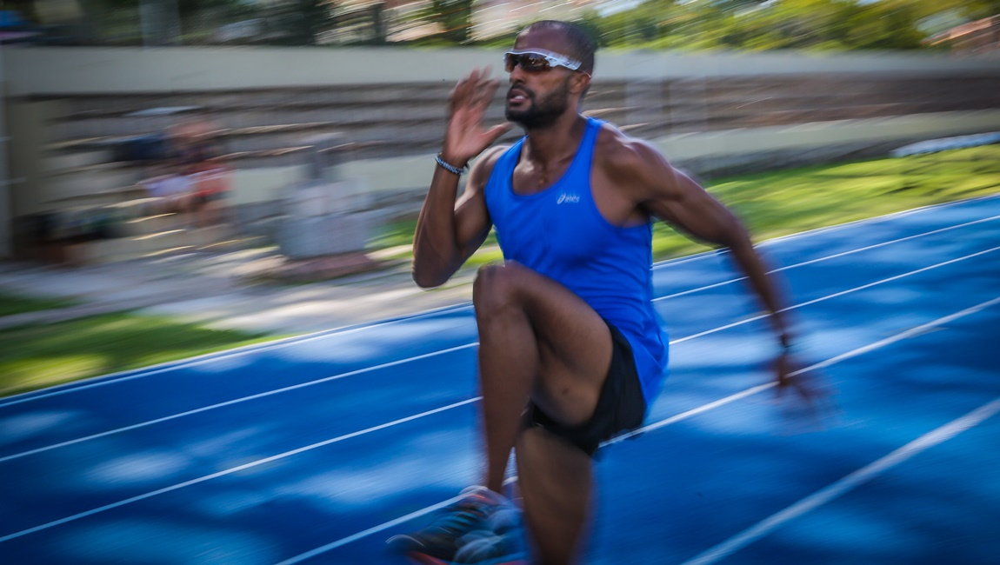
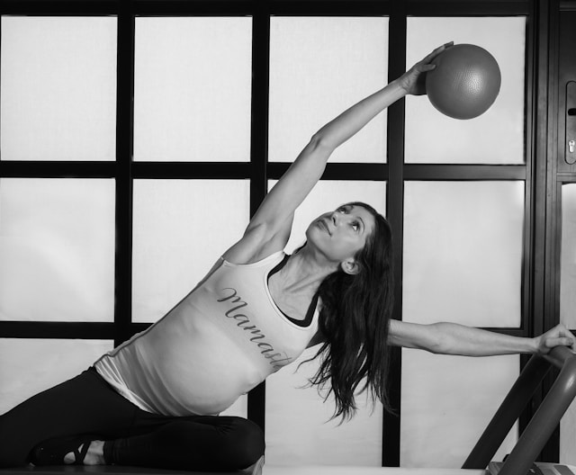
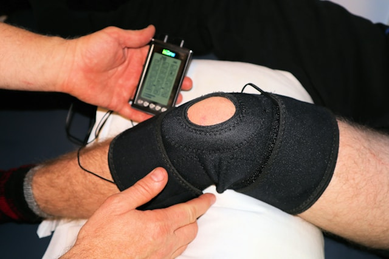

Nossos Serviços em Detalhe
Descubra as especialidades e abordagens personalizadas para cada necessidade.
Agende sua AvaliaçãoPara Esportistas e Atletas
Otimize seu desempenho, recuperação e bem-estar físico com nossas especialidades focadas no universo esportivo.

Ganho de Massa Muscular
O ganho de massa muscular está correlacionado com o estímulo dos treinos, recuperação via alimentar e equilíbrios hormonais. Temos uma equipe completa para este objetivo:
- Nutricionista: Indicando a melhor dieta e, se necessário, suplementos.
- Nutrólogo: Analisando exames sanguíneos para manter o equilíbrio hormonal.
- Personal Trainer: Montando o melhor treino para seu corpo e seu objetivo.

Performance
Atletas possuem uma carga de treino intensa e nem sempre conseguem uma boa recuperação. Um conjunto de bons treinos e boa recuperação aumentam a performance nas competições.
- Nutricionista e Nutrólogo: Para equilíbrio de desgastes físicos e dieta.
- Psicóloga: Analisa questões que podem influenciar no rendimento.
- Fisioterapeuta Esportivo: Faz trabalho preventivo para evitar lesões em fases agudas de treinamento.
Saúde e Bem-Estar Geral
Cuidamos da sua saúde de forma holística, promovendo qualidade de vida em todas as fases.

Gestação Saudável
O cansaço e o desânimo são comuns na gestação, mas exercícios são benéficos não só durante a gestação, mas também na hora do parto e para sua recuperação.
- Personal Trainer: Montando um treino especial e seguro para as futuras mamães.
- Fisioterapeuta: Mantendo o alongamento e exercícios posturais.
- Nutricionista: Equilibrando os alimentos para a adequação do ganho de peso certo na gestação.

Tratamento da Obesidade
O excesso de peso predispõe o organismo a uma série de doenças. Nossa equipe especializada oferece uma abordagem completa para o emagrecimento saudável e sustentável.
- Nutricionista: Indicando a melhor dieta nas fases do emagrecimento.
- Nutrólogo: Analisando exames e ajudando a manter o ritmo acelerado de perda de peso.
- Personal Trainer: Montando o melhor treino para acelerar a perda de peso.
- Psicóloga: Ajudando a lidar com tensões e compulsividades.
Alívio de Dores e Lesões
Recupere-se e previna dores crônicas e lesões com abordagens terapêuticas e personalizadas.

Dores no Corpo e Lesões
A dor é um sinal de alerta do corpo. É melhor verificar e corrigir do que deixar piorar e virar crônico. Oferecemos múltiplos caminhos para o tratamento e prevenção:
- Sessões de Fisioterapia: Com aparelhos modernos para reabilitação.
- Sessões de RPG: Correção de tensões e dores musculares decorrentes da má postura.
- Teste de Baropodometria: Avaliação da forma do pisar e andar, que afetam dores em todo o corpo.
- Palmilha Postural: Fabricada de forma personalizada para ajudar no equilíbrio do corpo.